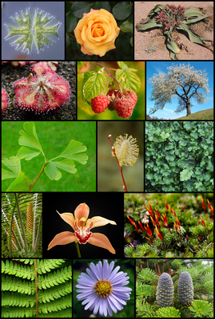

Mer_Mix
Растения
Растения (лат. Plantae, или Vegetabilia) — биологическое царство, одна из основных групп многоклеточных организмов,
отличительной чертой представителей которой является способность к фотосинтезу, включающая в себя в том числе мхи, папоротники,
хвощи, плауны, голосеменные и цветковые растения. Нередко к растениям относят также все водоросли или некоторые их группы.
Растения (в первую очередь, цветковые) представлены многочисленными жизненными формами, наиболее распространёнными из которых
являются деревья, кустарники и травы

Растения против зомби
Plants vs. Zombies (с англ. — «Растения против зомби») — компьютерная игра в жанре Tower Defense, разработанная и
изданная американской студией PopCap Games для Windows и OS X 5 мая 2009 года. Впоследствии она была портирована на
приставки, портативные игровые системы и мобильные устройства. Прежде чем утвердиться как самостоятельная игра, Plants
vs. Zombies первоначально разрабатывалась геймдизайнером Джорджем Фэном как продолжение игры Insaniquarium.Перейти к
разделу «#Разработка»
В Plants vs. Zombies игрок берёт на себя роль домовладельца, чей дом постоянно подвергается нападениям зомби с
расположенного напротив кладбища. Чтобы защитить дом от зомби, игроку нужно сажать растения, которые наносят урон или
иным образом причиняют вред наступающим врагам. По ходу уровня игрок собирает единицы «солнца», обладание определённым
количеством которых позволяет посадить то или иное растение. Зомби приближаются к дому по нескольким параллельным
линиям, проходящим по лужайке возле дома, вследствие чего игроку требуется сажать растения на всех этих линиях. Если
хоть один зомби добирается до конца своей линии, уровень считается проигранным.Перейти к разделу «#Игровой процесс»
Игра получила признание критиков и была номинирована на множество наград. Например, в рамках премии Golden Joystick
Awards 2010 она выиграла в номинациях «Download Game of the Year»[К 1] и «Strategy Game of the Year»[К 2]. Plants vs. Zombies
получила похвалу за её нарочито простой, но увлекательный геймплей и юмористический стиль. В связи с успехом игры, за ней
последовал выход в свет ряда различных продолжений. Plants vs. Zombies положила начало одноимённой серии игр, которая включает в
себя два прямых сиквела (Plants vs. Zombies 2: It’s About Time и Plants vs. Zombies 3), три шутера от третьего лица
(Plants vs. Zombies: Garden Warfare, Plants vs. Zombies: Garden Warfare 2 и Plants vs. Zombies: Battle for Neighborville) и два
спин-оффа (Plants vs. Zombies Adventures[es] и Plants vs. Zombies Heroes).Перейти к разделу «#Наследие»